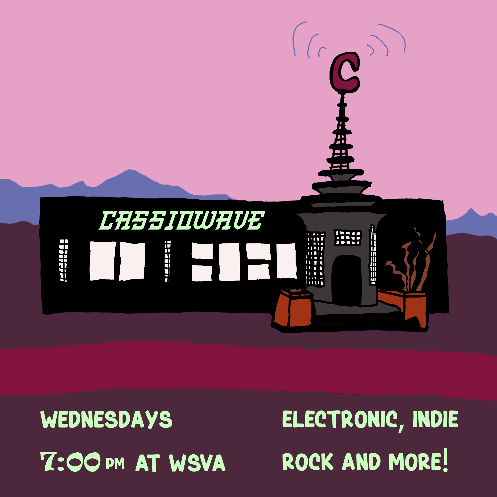
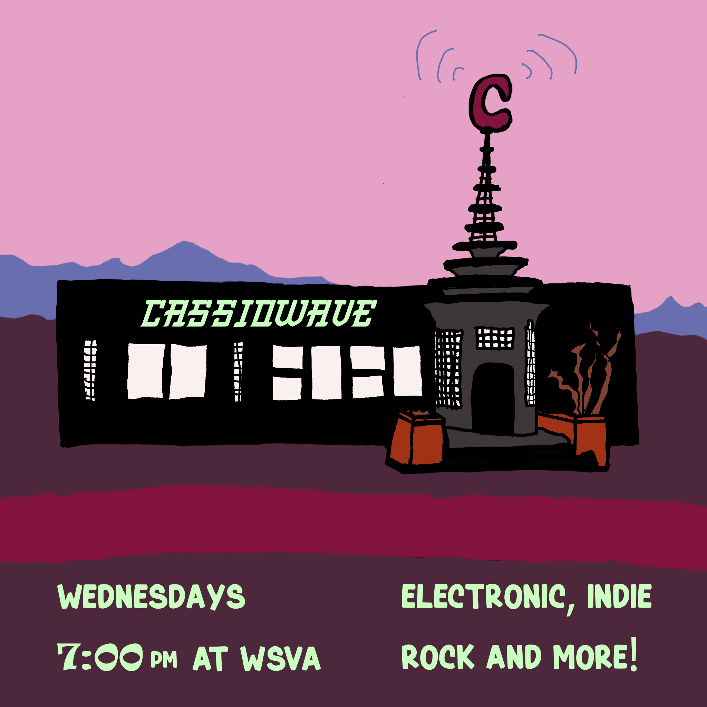
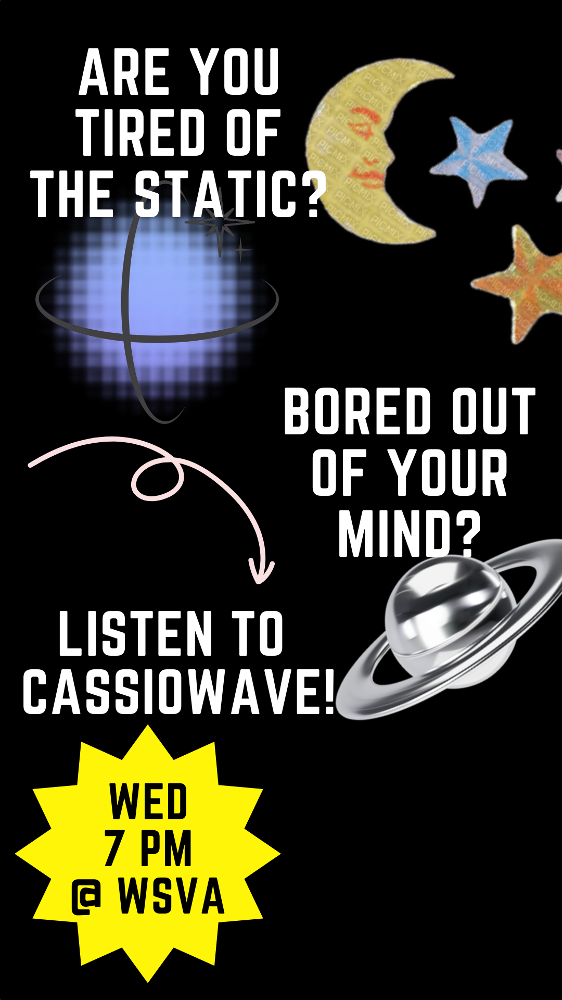
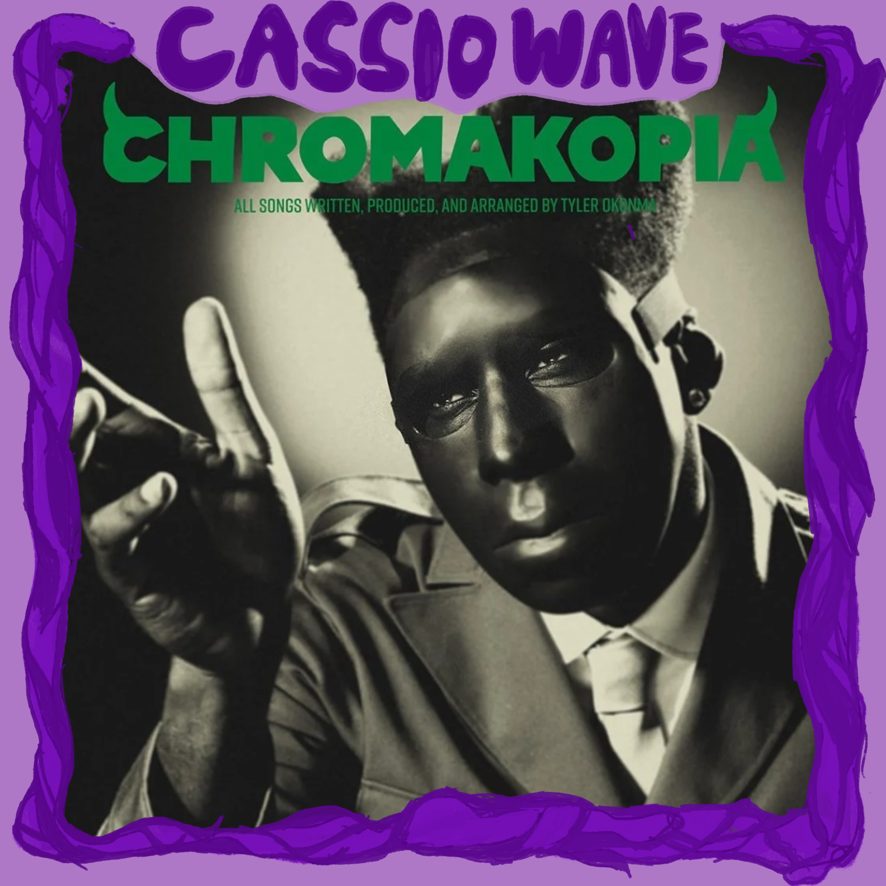
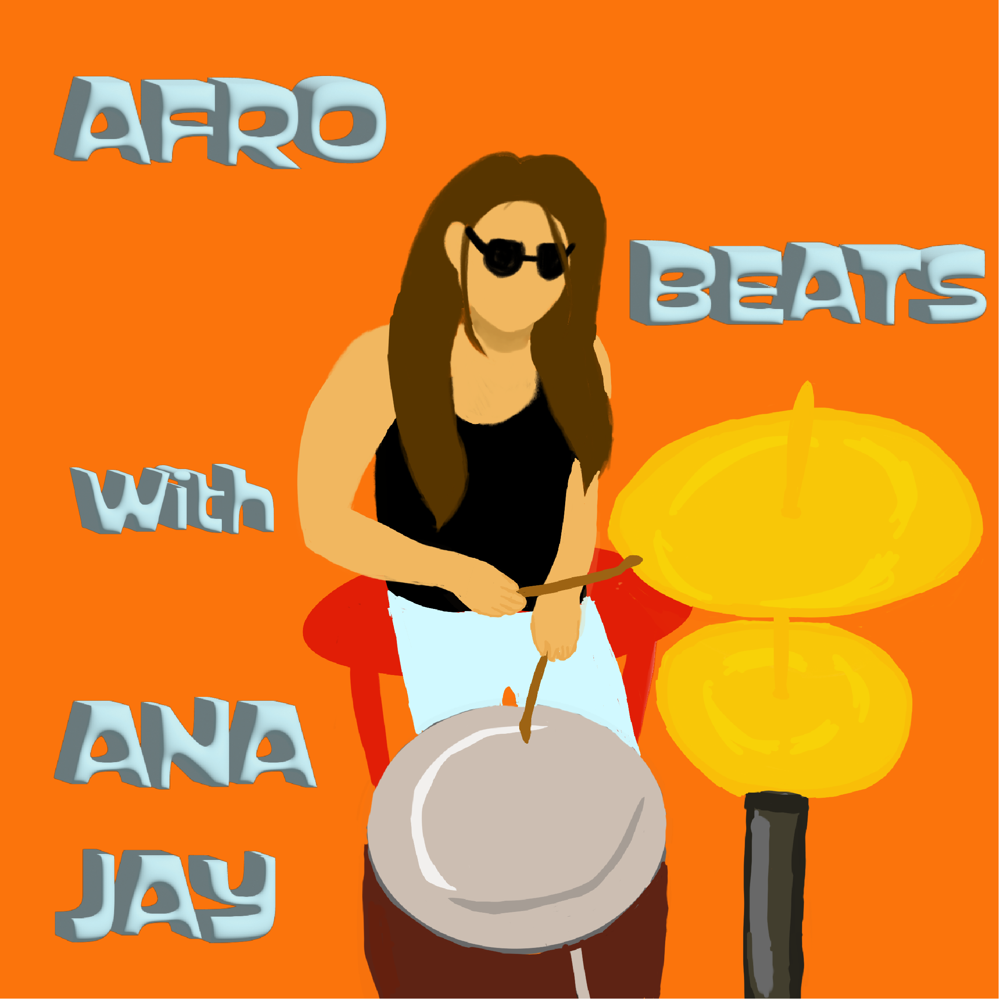
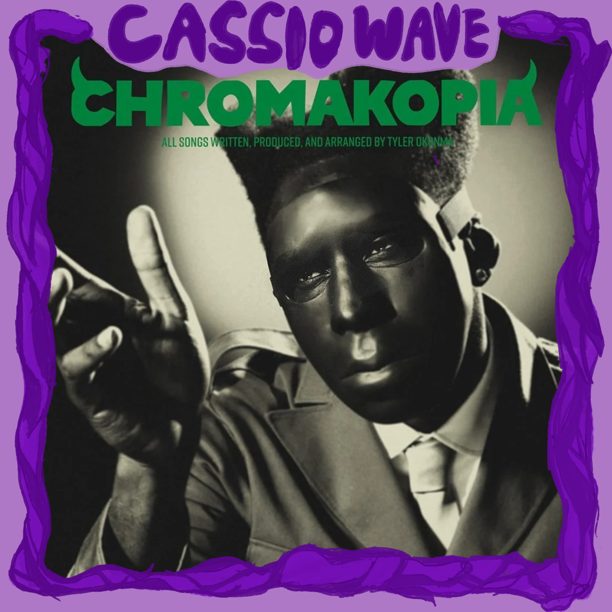
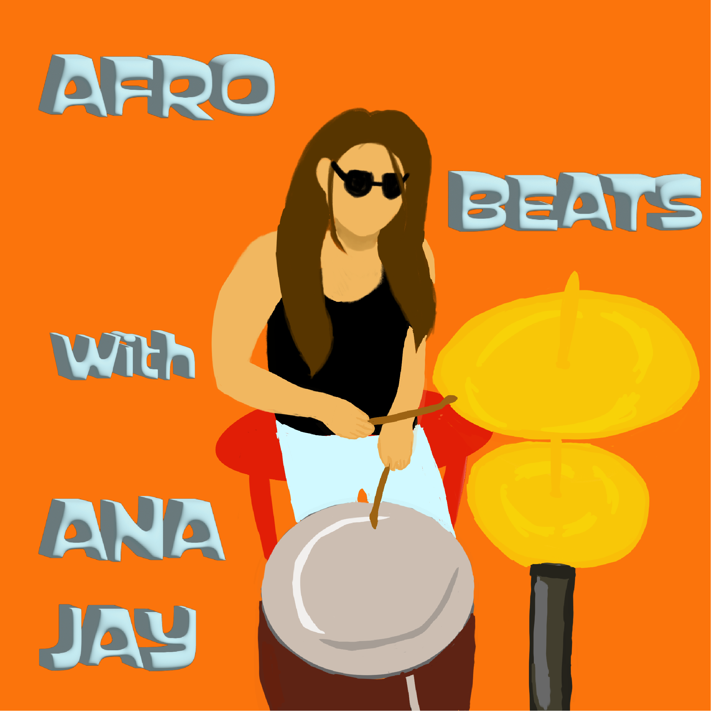

 Cassiowave Radio
 Cassio Pedal
Cassio Pedal
The Mush-Brush

 Cassiowave Radio
Cassio Pedal
The Mush-Brush
Procreate, Adobe Creative
Cassiowave Radio
Role: Producer, Host, and Graphic Designer
Existing between the frequencies, Cassiowave is an experimental multi-genre deep dive into the endless pool of music. Cassiopeia, your host, will be your guide for the genre or artist of the week, ranging from electronic, rock, indie, and international pop! As your one stop shop into the unknown, local artists and bands will also make surprise appearances whenever they cross through the wormhole. Come join before the tide pulls back.
I wanted to focus on the community aspect of music, including local bands and guests on the show. It covers a variety of topics, genres, and media.

I am the creative director behind this show, giving me first hand experience in running a consistent project for a long amount of time.


 



Adobe Illustrator, Solder
Cassio Pedal
Role: Graphic Designer & Engineer
A delay guitar pedal made by hand.
The cover was designed on Adobe Illustrator, and then UV printed onto a spray painted shell. The inner components were soldered by hand.